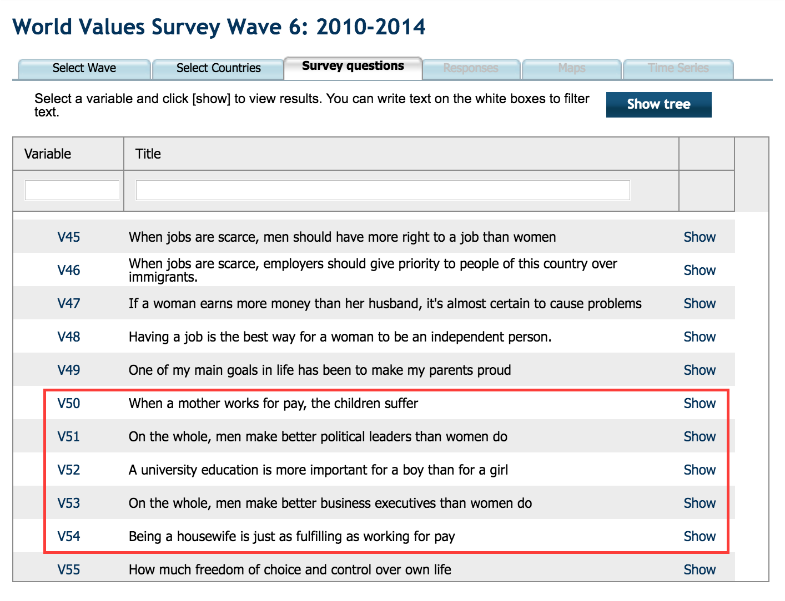
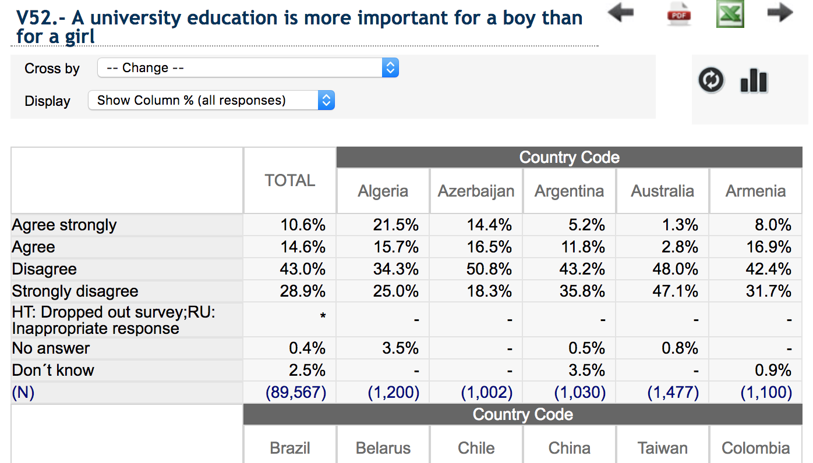
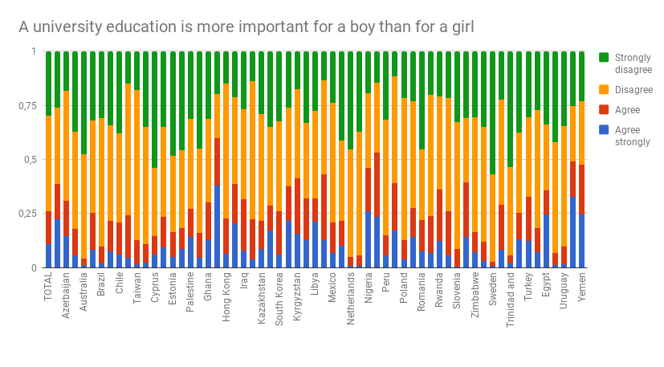
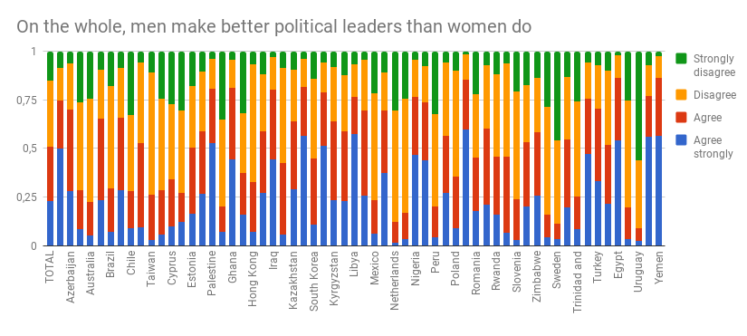
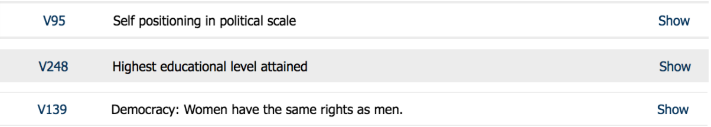
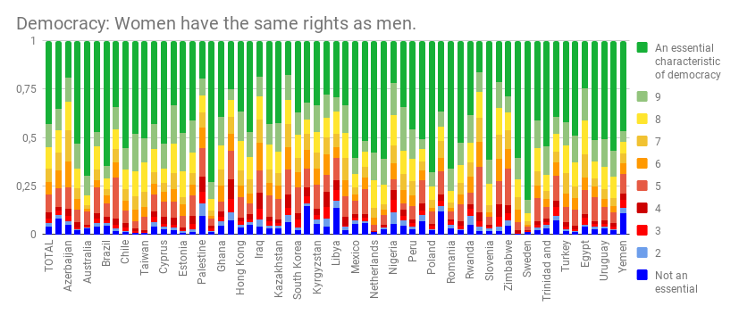

What do people in different countries actually think about gender inequality issues? Is this correlatable to things like level of education or type of politics for that country?
Erik Lindberg | erikli6@kth.se
Note: Sadly I never managed to finish this visualization. Therefore, the colors presented in the map is just arbitrary filler data. Likewise, the buttons and slider doesn't do anything.
I chose to focus on gender inequality as my research theme for this visualization. Going through VVS I found these 5 sets of [Agree - Disagree] questions that I think gives quite a detailed look into the thoughts about gender inequality in a country.
To more easily understand the data at hand during the analysis I used google charts for some simple visualizations, for example:
I found very varied data among the countries. Both with strong support and opposition to specific questions about gender inequality. To get a more nuanced view of the matter, I chose 3 other variables concerning more general questions of a country.
For example:
From this I began to approach some interesting statistics that I wanted to visualize. Therefore I set out to create a visualization that could show a user these 5 variables, cross-compared to the 3 general variables, on a world map concerning all these countries and over a span of 20 years.
Sadly I never had time to finish this, but the plan was as follows: